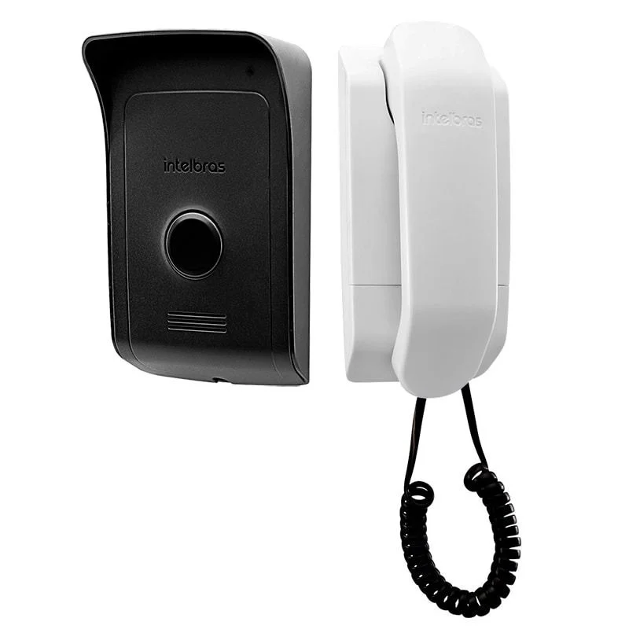

Porteiro Residencial - Intelbras IPR 8010
O porteiro residencial IPR 8010 possibilita a comunicação de áudio entre o ambiente interno e externo com extrema nitidez. Com excelente custo-benefício e instalação simplificada, ele permite abrir até dois portões de forma individual com apenas um equipamento.

Especificações Técnicas
Confira os detalhes operacionais e de instalação do produto:
| Característica | Especificação |
|---|---|
| Modelo | Intelbras IPR 8010 (Módulo Externo + Interno) |
| Abertura de Fechaduras | Abre até 2 portões (Ex: Fechadura elétrica 12V e Portão de garagem via Relé) |
| Cabeamento Otimizado | Instalação utilizando apenas 2 fios entre o módulo externo e o interno |
| Expansão | Compatível com até 3 módulos internos (extensões) adicionais |
| Aviso de Portão Aberto | Alerta sonoro caso o visitante deixe o portão aberto (requer sensor magnético) |
| Proteção Antissabotagem | Alarme de Tamper: bloqueia a abertura da fechadura em caso de curto-circuito ou vandalismo externo |
| Integração de Segurança | Interface com central de alarme (pode ser ligado a uma zona com fio da central) |
| Alimentação | 100 a 240 Vac (Bivolt Automático) interligada diretamente no módulo externo |